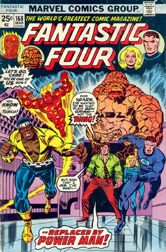

Least Favorite Story Line:Fantastic Four 168 where Alicia is revealed to be a Skull imposter. Reed never etected it, she was sculpting fine in 285, and Spidey's spider-sense never kicked in when they met. All I can say is, ya.
|
 |
|
Little
Known Fact:Luke Cage fought one villain then went nuts.
Also a hero that can lift two tons to replace the Thing who was
benching 50 then. Maybe Alicia wasn't the only one replaced by the
evil Skrulls
|
| Powers:Luke Cage was granted super strength and bullet proof skin due to the experimental drugs injected into him by the government. |